UR5e Payload Research · Learning-Augmented Control
UR5e Residual Reinforcement Learning
Testing whether bounded PPO, SAC, and TD3 torque corrections improve an established computed-torque controller under payload-model mismatch, including opposite-direction training and intermediate 4 kg cross-evaluation in ROS 2–PhysX.
View project source on GitHub →
Video will be embedded here after publication.
Reserved for the UR5e PhysX demonstrations of PPO/SAC/TD3 compensation, reverse mismatch, and intermediate-mass evaluation.
1. Learning-Augmented Control Architecture
The nominal G025 computed-torque PD controller remains active. PPO, SAC, and TD3 are evaluated as alternative ways to generate an additional six-joint residual torque under an initial 3 kg model / 5 kg actual payload condition. The learned output supplements model-based feedforward and tracking feedback rather than replacing them.
The observation has 49 components comprising measured and reference states, tracking errors, previous policy action, previous nominal torque, and normalized task time. Its time input is informative for the fixed motion but limits what can be inferred about generalization to different trajectories. The reward prioritizes Cartesian tracking while softly penalizing joint error and excessive or abruptly changing residual action.
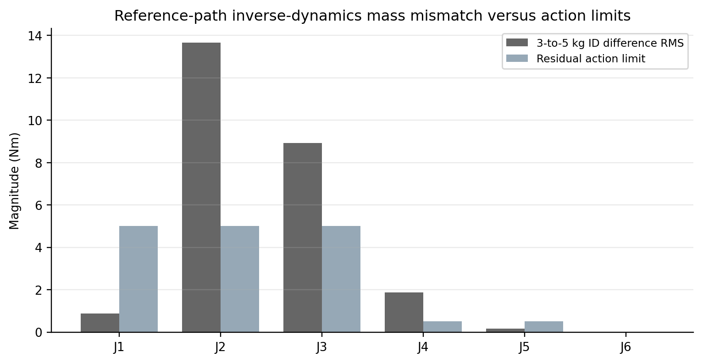
2. Numerical PPO, SAC, and TD3 Comparison
Each algorithm received 30,000 environment interactions using seed 42 and a common 150-control-step transportation episode. Deterministic evaluation checkpoints were recorded every 3,000 interactions. Equal interactions do not imply equal training wall time or the same number of gradient updates.
| Algorithm | Best checkpoint | Offline Cartesian RMSE | Residual RMS |
|---|---|---|---|
| PPO | 27,000 | 6.0939 mm | 2.900 Nm |
| SAC | 27,000 | 6.9339 mm | 2.916 Nm |
| TD3 | 21,000 | 6.1122 mm | 3.450 Nm |
The zero-residual offline benchmark was 10.6358 mm. TD3 reduced error rapidly in early training; PPO achieved the lowest observed best-checkpoint RMSE by only 0.0183 mm over TD3. One seed and a fixed trajectory do not support a universal algorithm ranking.
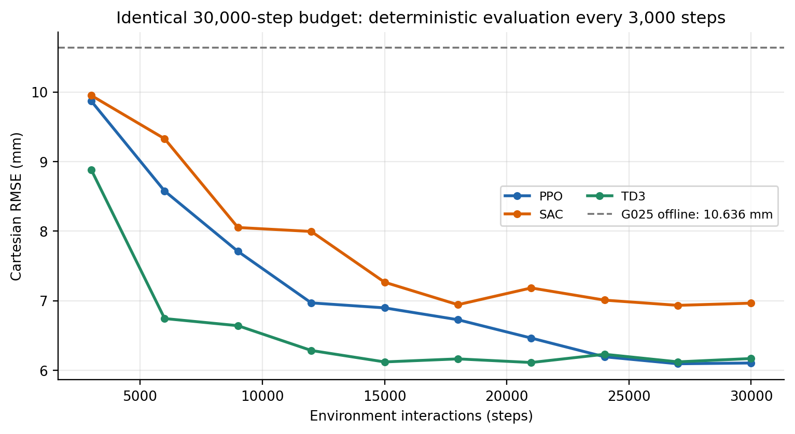
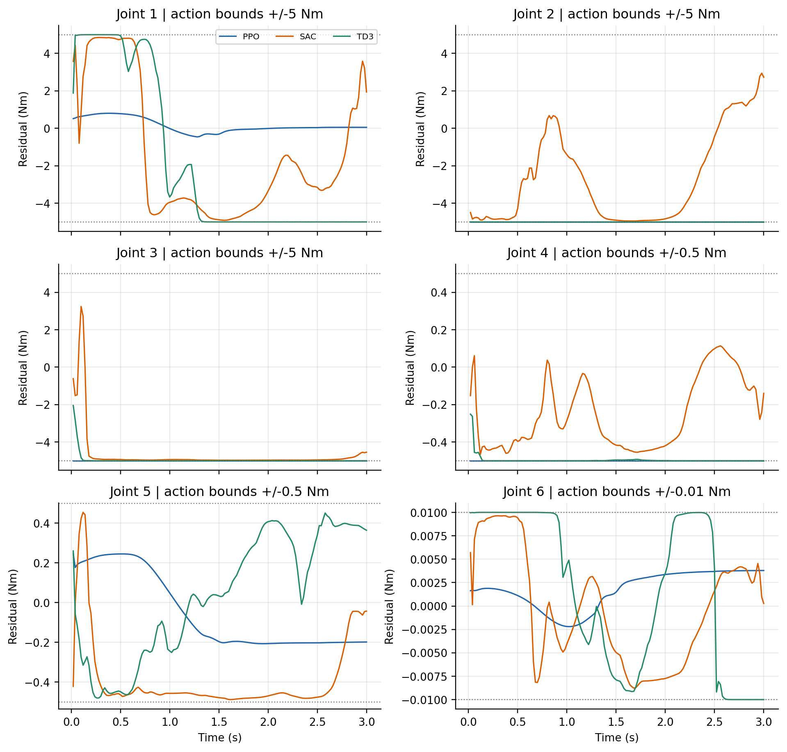
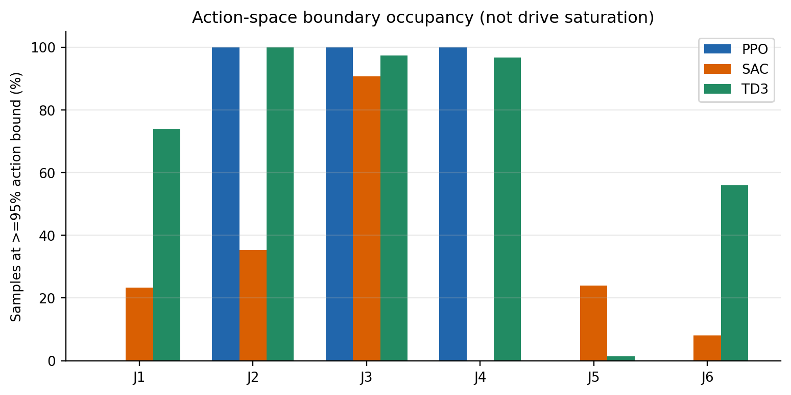
3. Transfer from Numerical Training to PhysX
Policies were then tested through the independently executed ROS 2–PhysX effort pipeline. The same reference and nominal controller were retained while the plant carried 5 kg. The experiment therefore tested whether the learned correction remained useful outside its original numerical execution environment.
| Controller | 3 kg model / 5 kg actual PhysX RMSE | Reduction vs G025 |
|---|---|---|
| G025, zero residual | 10.560 mm | Baseline |
| PPO + G025 | 6.061 mm | 42.6% |
| TD3 + G025 | 6.103 mm | 42.2% |
| SAC + G025 | 6.935 mm | 34.3% |
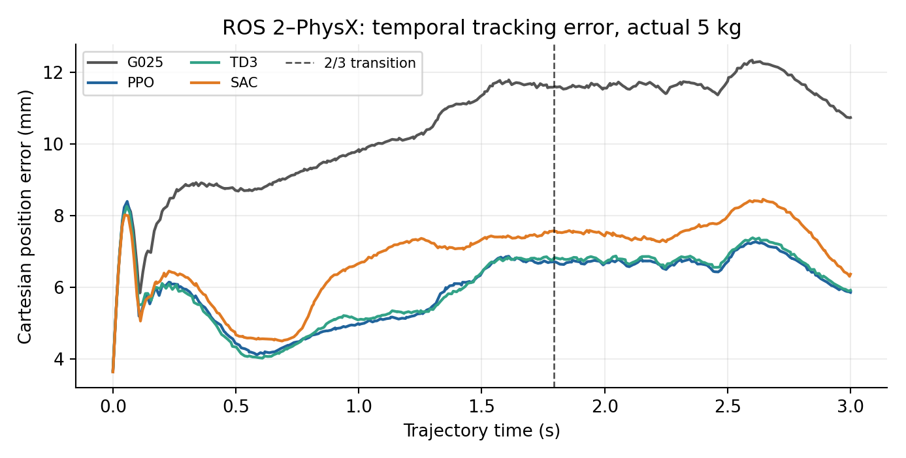
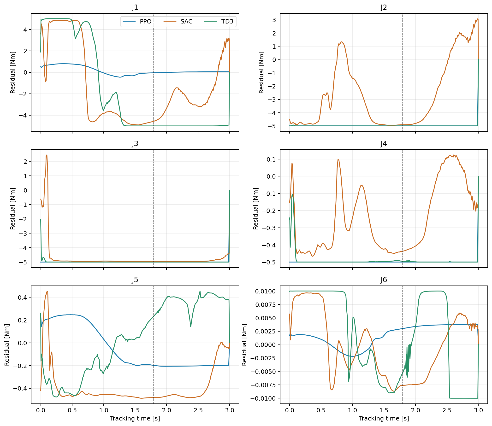
4. Where Learned Compensation Does Not Help
The same learned policies were evaluated at lighter and matched actual payload masses while preserving the 3 kg nominal model. Performance degraded sharply when the loading assumptions were no longer those used during training. In the matched 3 kg case, the zero-residual controller was already accurate; all three learned corrections increased error.
| Controller | 1 kg actual | 3 kg actual | 5 kg actual |
|---|---|---|---|
| G025 | 10.920 mm | 1.195 mm | 10.560 mm |
| PPO | 15.508 mm | 5.009 mm | 6.061 mm |
| TD3 | 15.270 mm | 5.048 mm | 6.103 mm |
| SAC | 14.818 mm | 4.884 mm | 6.935 mm |
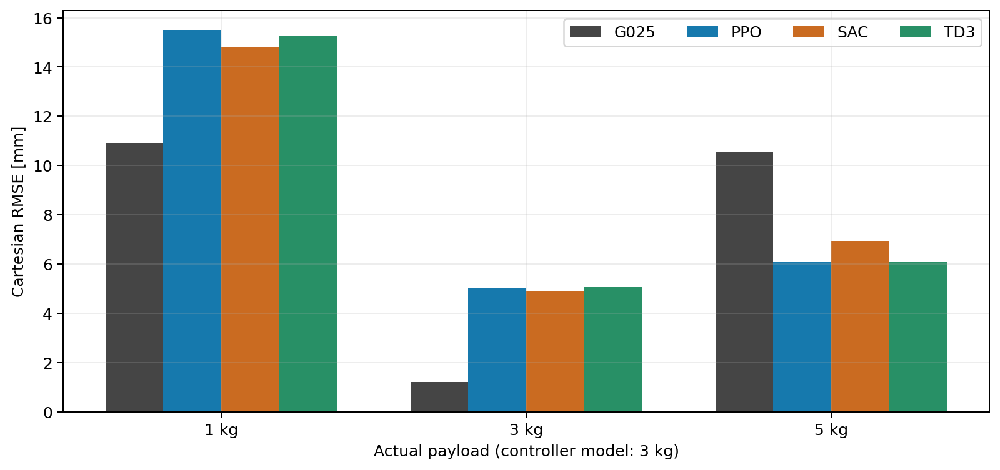
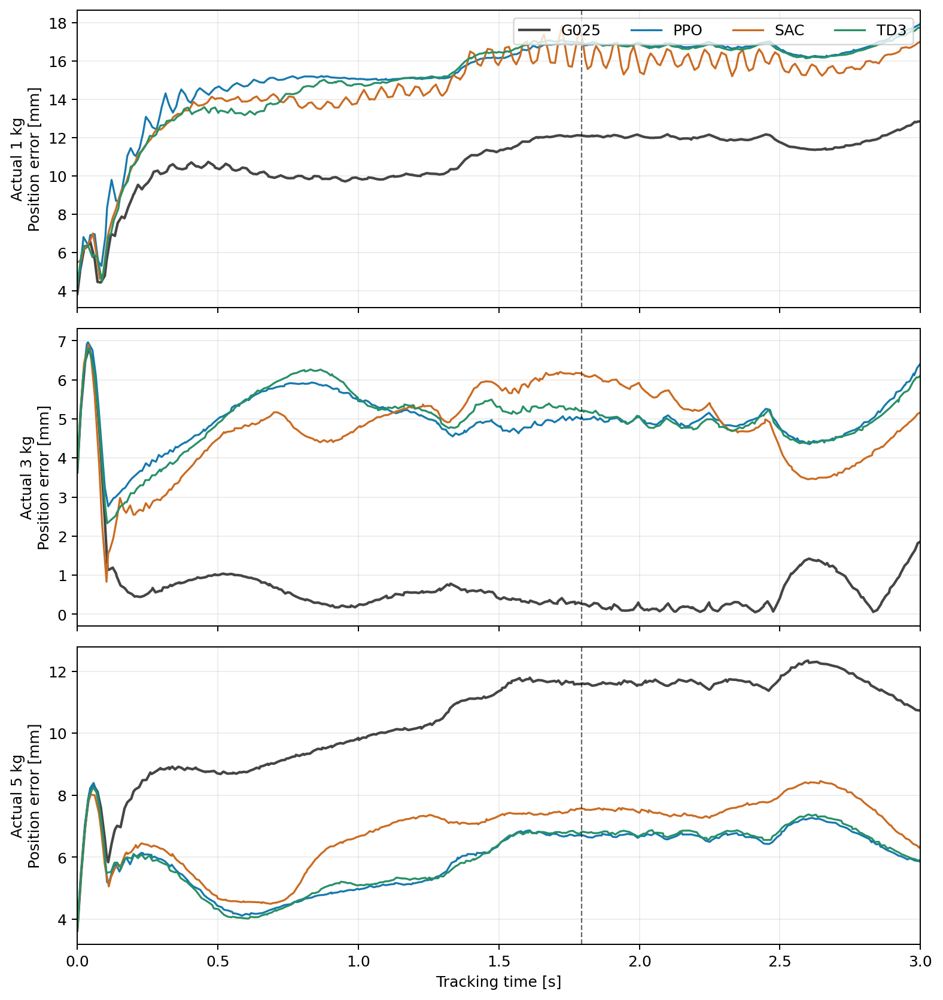
5. Reverse Mismatch: Model 5 kg, Actual 3 kg
A separate PPO policy was trained for the opposite mass discrepancy. When the nominal controller assumed 5 kg but PhysX carried 3 kg, the matching zero-residual baseline had 8.039 mm Cartesian RMSE. The newly trained reverse policy reduced it to 4.585 mm, an improvement of approximately 43.0%. At J2, J3, and J4, the dominant corrective actions changed direction in a manner consistent with the reversed analytical inverse-dynamics difference.
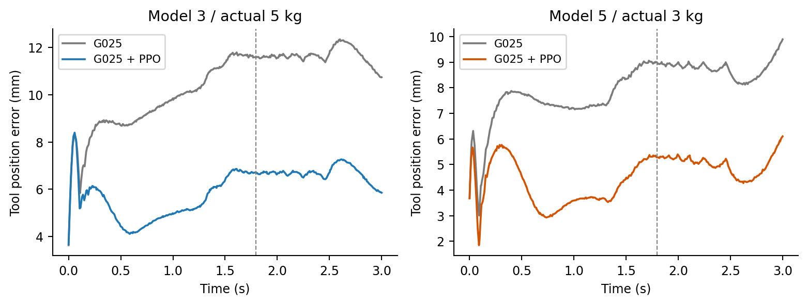
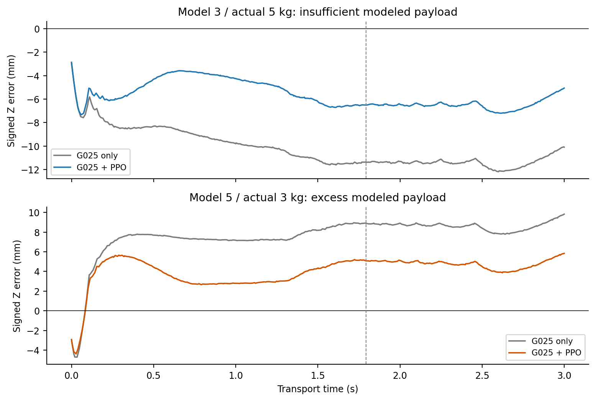
6. Intermediate 4 kg Cross-Evaluation
The two separately trained PPO controllers were tested at a common actual 4 kg mass. Policy A used the 3 kg nominal model and the positive-mismatch policy; Policy B used the 5 kg nominal model and the negative-mismatch policy. These are comparisons of complete nominal-plus-residual controllers, not the learned networks isolated from their different model-based feedforward calculations.
| Evaluation configuration | Mass discrepancy | Cartesian RMSE |
|---|---|---|
| Policy A: model 3 kg / actual 4 kg | +1 kg | 1.931 mm |
| Policy B: model 5 kg / actual 4 kg | −1 kg | 1.763 mm |
The 0.168 mm aggregate difference favored Policy B in this test. The ascent and descent metrics, however, did not favor one configuration uniformly. The experiment probes one intermediate loading condition on a fixed reference; it is not proof of broad variable-payload generalization.
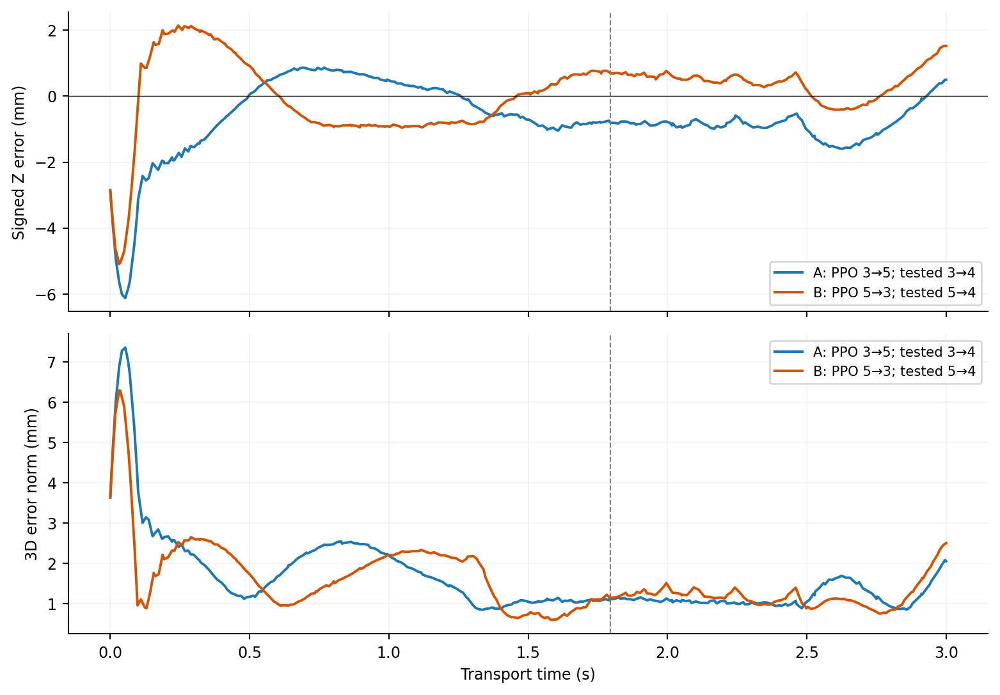
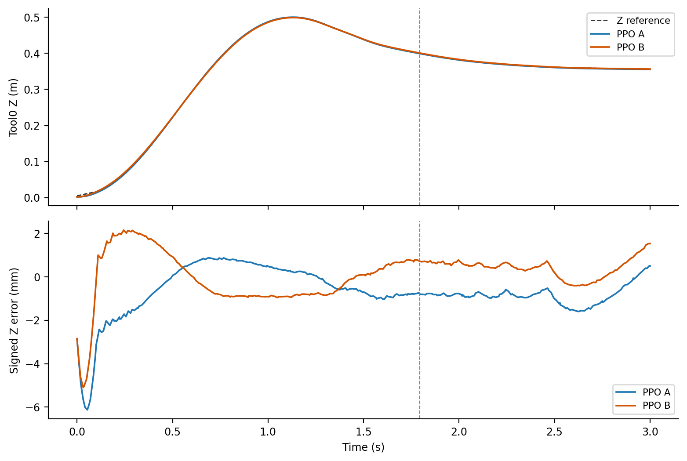
7. Physical Interpretation and Deployment Boundaries
The physical interpretation is conditional: the residual can compensate for a model discrepancy, but it does not identify payload mass explicitly or guarantee that the correction will be appropriate outside its training conditions. Joint-level analytical torque differences provide a diagnostic reference, not a complete ground truth for optimal closed-loop torque.
The numerical model and PhysX runtime also differ in execution details, and the recorded Cartesian positions are reconstructed from joint states. The study does not establish physical grasp stability, verified collision clearance, manufacturer hardware-effort compliance, or formal closed-loop stability for the learned controller.
Project Resources
Source Code & Experiment Records
UR5e analytical modeling, nominal control, ROS 2–PhysX implementation, residual RL training, evaluation routines, and recorded experiment data.
Open Part 3 on GitHubTechnical Reports
The complete integrated investigation and a concise engineering version are provided as two separate PDF files.
Condensed ReportFull ReportProject by Sooyong Kim · Robotics & Autonomous Systems Portfolio